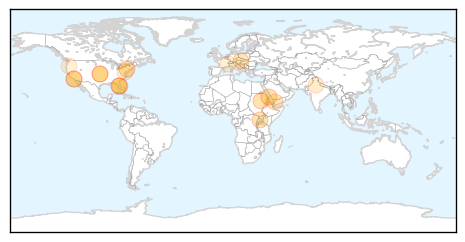

Measles
30-Day Web Trend
0 alerts, 0 warnings

30-Day Twitter Trend
0 alerts, 0 warnings

Article Locations
Article Confidences
Top Articles:
- 0.974
- California Department of Public Health declares measles outbreak over
- 0.967
- UNICEF, partners support mass vaccination campaign in Sudan - Xinhua
- 0.964
- UNICEF, partners support mass vaccination campaign in Sudan
- 0.950
- Hospital first sent measles patient home
- 0.944
- First They Came for the Anti-Vaxxers
- 0.902
- Nearly 8 million children in Sudan to be immunized against measles following deadly outbreak – UNICEF
- 0.862
- Austria sees increase in cases of measles outbreaks
- 0.852
- One child in 5 still not vaccinated – WHO
- 0.848
- State health officials sound measles alarm
- 0.830
- Health officials raise measles spread concerns
- 0.781
- Yemen violence death toll tops 1,000
- 0.680
- Study rules out link between autism, MMR vaccine even in at-risk kids
- 0.677
- Kenya : One child in five still not vaccinated, says World Health Organization
- 0.622
- World Immunization Week: 22 million infants miss out on basic vaccines, says WHO
- 0.610
- Modern Healthcare Modern Healthcare business news, research, data and events
- 0.604
- Catonsville High School parents warned of possible TB exposure
- 0.550
- World Immunization Week: UN warns global vaccination targets ‘far off track’
- 0.543
- WHO calls for renewed efforts in global vaccination - Xinhua
- 0.521
- News reader
- 0.506
- 10 U.S. States Now Considering Mandatory Vaccination
Top Tweets:
-
No tweets found for Apr 23, 2015
Unknown
30-Day Web Trend
0 alerts, 0 warnings

30-Day Twitter Trend
0 alerts, 0 warnings

Article Locations

Article Confidences

Top Articles:
- 0.992
- Federal scientists working on bird flu vaccines
- 0.987
- Vaccine created in response to spreading of bird flu
- 0.982
- State of emergency declared over bird flu outbreak in MN
- 0.969
- Has Someone Deployed a Flesh Eating Virus against ISIS?
- 0.931
- Dayton declares rare Minn. agriculture emergency for growing avian flu
- 0.918
- USDA/CDC Ramping UP to Control Spread of Avian Flu
- 0.917
- Worried About Dog Flu? Five Tips to Protect Your Pup
- 0.917
- Chicago Tribune
- 0.917
- Chicago Tribune
- 0.917
- Chicago Tribune
- 0.917
- Chicago Tribune
- 0.917
- Chicago Tribune
- 0.917
- Chicago Tribune
- 0.917
- Chicago Tribune
- 0.917
- Chicago Tribune
- 0.917
- Chicago Tribune
- 0.917
- Chicago Tribune
- 0.917
- Chicago Tribune
- 0.917
- Chicago Tribune
- 0.917
- Chicago Tribune
- 0.917
- Chicago Tribune
- 0.917
- Chicago Tribune
- 0.917
- Chicago Tribune
- 0.917
- Chicago Tribune
- 0.917
- Chicago Tribune
- 0.917
- Chicago Tribune
- 0.917
- Chicago Tribune
- 0.917
- Chicago Tribune
- 0.917
- Chicago Tribune
- 0.917
- Chicago Tribune
- 0.917
- Chicago Tribune
- 0.917
- Chicago Tribune
- 0.917
- Chicago Tribune
- 0.917
- Chicago Tribune
- 0.917
- Minnesota governor declares rare ag emergency
- 0.914
- Hantavirus exposure a risk for spring cleaning
- 0.911
- Botulism suspected at Ohio church dinner after woman dies, 23 sickened
- 0.905
- Baer chicken farm near Lake Park, Minn., hit with deadly avian flu
- 0.902
- Botulism Outbreak Caused by Church Potluck Dinner
- 0.900
- 1 dead, 23 sick after botulism outbreak at Ohio church picnic
- 0.898
- Health officials probe cause of suspected botulism at picnic
- 0.895
- Two More Test Positive for HIV in Roka Commune
- 0.885
- USDA vet: infected birds die quickly from H5N2
- 0.874
- Vaccines can help address global DR-TB epidemic: Experts
- 0.832
- World Malaria Day: call to close gaps in prevention and treatment to defeat malaria
- 0.831
- Montana health officials report increase in sexually transmitted - KTVQ.com
- 0.831
- BYM News Espanol
- 0.830
- UI to offer bachelor's degree in public health
- 0.818
- New research points to elderly as growing contributor to tuberculosis in China
- 0.818
- How do you get infected with “Listeria” and what are the risks
Showing top 50 articles...
Top Tweets:
- 0.572
- CDC disease detective investigated largest reported nat’l outbreak of EVD68; children most affected http://t.co/nZlNzUwFmB CDCEIS15